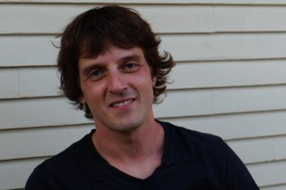
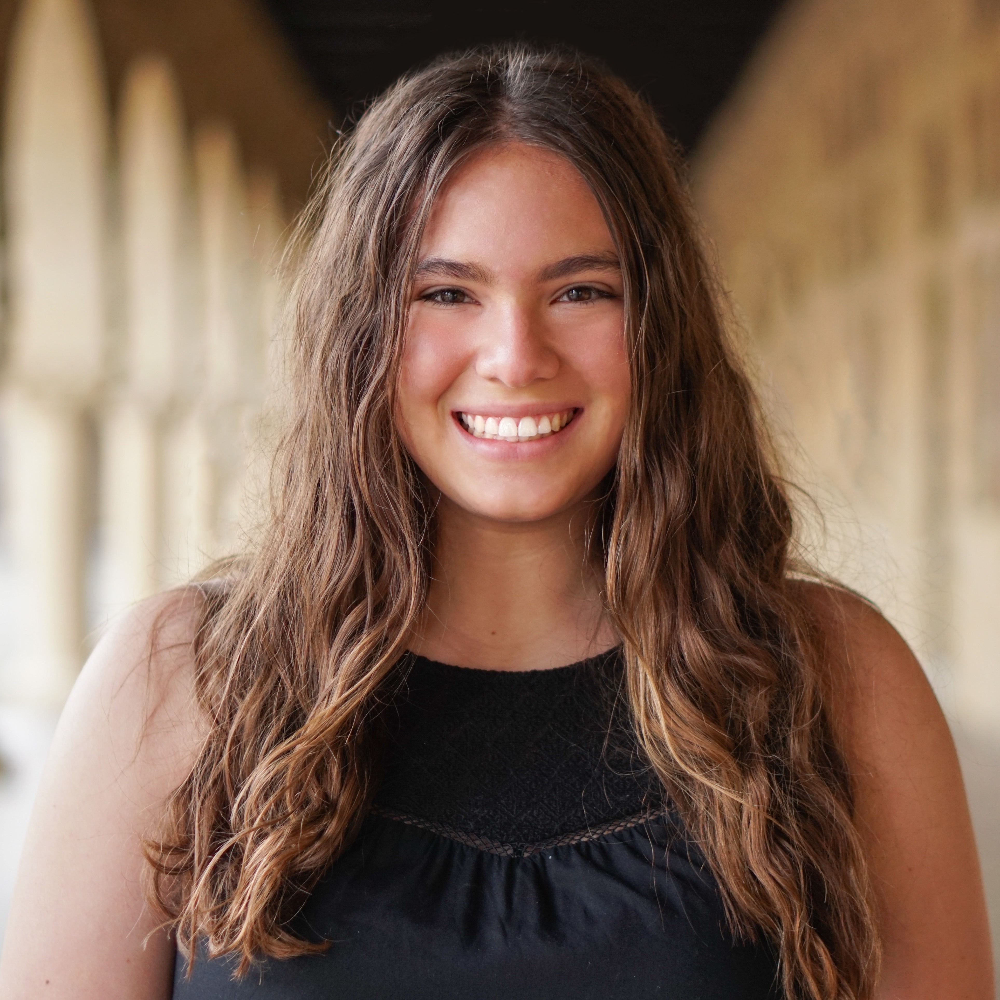
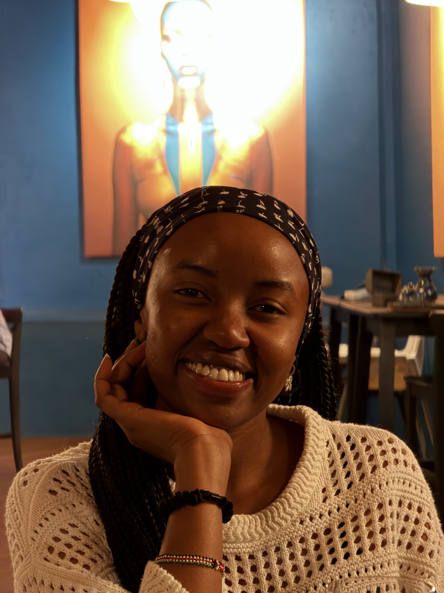
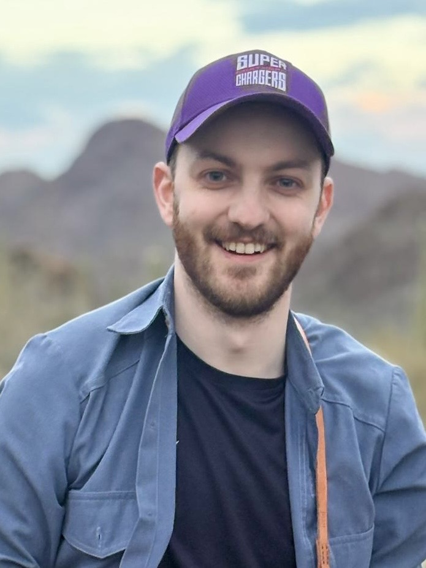
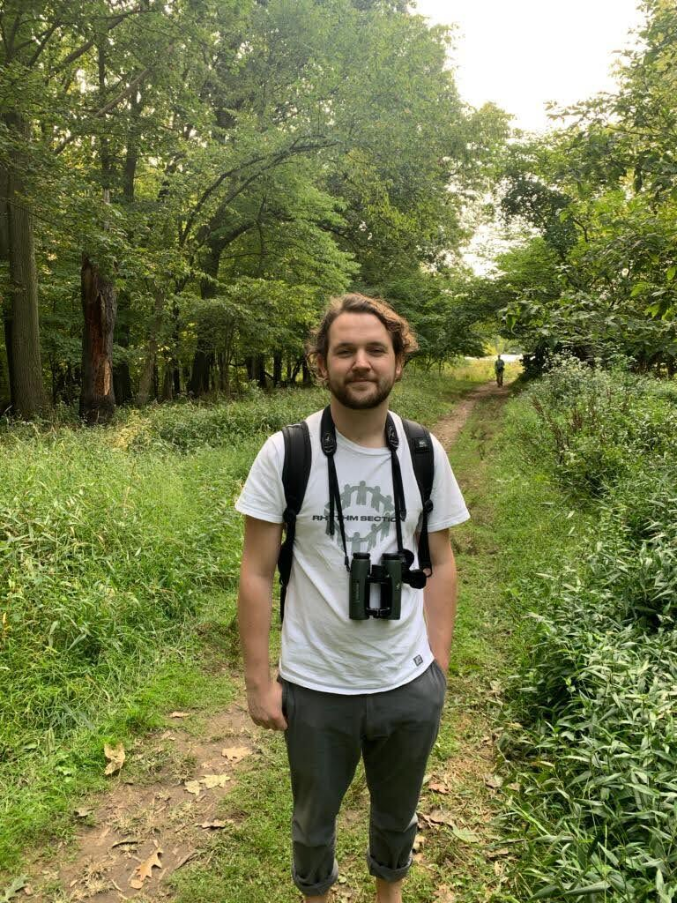
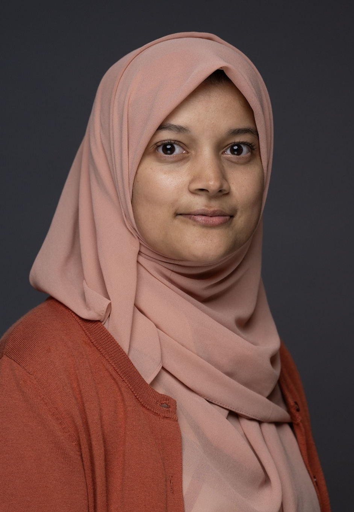
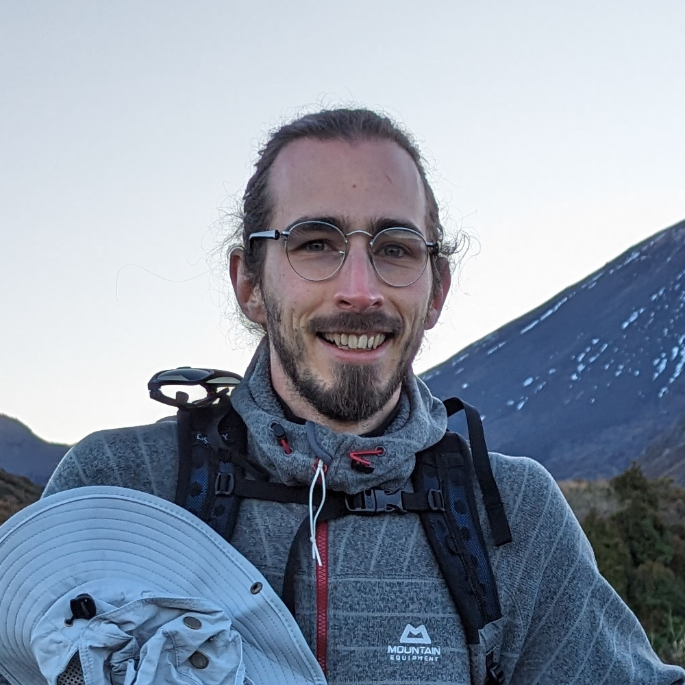

Instructors 2027

People by year: 2022 | 2023 | 2025 | 2026 | 2027
Meet the organizers and instructors for CV4Ecology 2027.
Organizers

Sara Beery
Sara Beery has always been passionate about the natural world, and she saw a need for technology-based approaches to conservation and sustainability challenges. This led her to pursue a PhD at Caltech, where her research focuses on computer vision for global-scale biodiversity monitoring. Her work is funded by an NSF Graduate Research Fellowship, a PIMCO Data Science Fellowship, and an Amazon AI4Science Fellowship. She works closely with Microsoft AI for Earth and Wildlife Insights (via Google Research) to translate her work into usable tools. Sara’s experiences as a professional ballerina, a queer woman, and a nontraditional student have taught her the value of unique and diverse perspectives in the research community. She’s passionate about increasing diversity and inclusion in STEM through mentorship, teaching, and outreach.

Eric Orenstein
Eric’s work lives at the intersection of ecology and computer vision, enabling unique studies of rapidly fluctuating marine environments. He uses imagery to study marine population dynamics, how they are impacted by their environment, and how they in turn influence the rest of the ecosystem. Eric has built and maintained imaging devices; worked with autonomous and remotely operated vehicles; executed field programs as a diver, small boat operator, and scientist aboard large research vessels; and used the data to study diverse organisms, from plankton to fish. Eric spends lots of time thinking about how to get robots to do useful things based on population changes they encounter while underway.

Shir Bar
Shir is an incoming postdoctoral researcher in Prof. Sara Beery's lab at MIT, where she will work on detecting rare behaviors from movement data. She comes from a background in marine ecology and completed her Ph.D. at Tel Aviv University, where she developed computer vision methods to study fish behavior and morphology. Having spent countless hours manually annotating data, she is passionate about teaching computer vision to ecologists and helping them scale their analyses.
Instructors

Elena Sierra
Elena is an EECS PhD student at MIT advised by Sara Beery & Sherrie Wang. Her research focuses on understanding the limitations of geospatial and ecological foundation models and developing methods to leverage diverse sources of data for conservation-relevant predictions.

Christine Muthee
Christine is an AI and Data Scientist who supports the World Resources Institute in using AI, remote sensing data, and ground data to understand drivers of low agricultural productivity and the impact of restoration on agriculture for smallholder farms. She is also a research associate for Carnegie Mellon University Africa, where she studies the impact of infrastructure access on land use and land cover in East Africa. She recently graduated from Carnegie Mellon University with a master’s degree in Engineering Artificial Intelligence and has worked on multimodal AI for humanitarian response, deep learning for farm-boundary segmentation, and GeoAI embeddings for land-use and land-cover classification. She joined the instructor team because of her curiosity about ecology, love of biodiversity protection, and passion for teaching and applying AI foundations to environmental research.

Alba Márquez-Rodríguez
Alba is an AI Scientist and PhD student in Computer Science at the University of Cádiz, southern Spain. Her research focuses on multimodal deep learning for biodiversity monitoring, integrating data from diverse remote sensors, including bioacoustics, RGB and thermal video, and radar. The goal is to develop efficient AI approaches for automated wildlife monitoring and to help ecologists better understand human impacts on biodiversity. After participating in CV4Ecology as a student in 2023, Alba is happy to return as part of the instructor team.

Jose F. Ruiz-Munoz
Jose F. Ruiz-Munoz is an Associate Professor at the Universidad Nacional de Colombia - Sede de La Paz. He holds a PhD in Engineering (Automation) from the Universidad Nacional de Colombia and previously held a postdoctoral position at the University of Florida’s Machine Learning and Sensing Lab. His work focuses on applying computer vision, deep learning, and data science to ecological monitoring, biodiversity assessment, and solar radiation forecasting. He teaches machine learning, computer vision, and neural networks, and has worked on projects in bioacoustics, image-based phenotyping, and AI-driven environmental analysis.

Michael Hobley
Michael is a postdoctoral researcher at Caltech and the Head Scientist of the Fisheye team, a multi-institutional project using AI and sonar to count migrating salmon. He is interested in utilising machine learning to empower scientific research and has worked on projects ranging from fish counting to disease detection and hypersonic flight. Previously, he earned his DPhil at Oxford in the Active Vision Laboratory, where he worked on vision-based zero-shot counting.

Louis Freeland-Haynes
Louis is a PhD student at the University of Pittsburgh, birder and machine-learning enthusiast. He works on developing improved bioacoustic classifiers and applying those classifiers for bird conservation. He is particularly interested in using these tools to collect data and make ecological inferences while accounting for uncertainty introduced by imperfect machine-learning models. He is also interested in making tools more accessible for conservationists and ecologists.

Tahiya Chowdhury
Tahiya is an assistant professor of computer science and AI at Colby College in Maine, USA. She is passionate about developing practical computational tools through fieldwork in close collaboration with conservation practitioners, and has worked with Bigelow Laboratory for Ocean Sciences, 7 Lakes Alliance, and the Rozalia Project. Her recent projects include satellite image segmentation for quantifying coral reef morphometrics, vision-language models for marine debris mapping, and physics-informed forecasting of lake water quality. Tahiya is interested in broadening AI literacy for non-technical audiences and has designed curricula that engage learners through hands-on, interdisciplinary, and real-world environmental contexts with computational thinking, computer vision, and multimodal machine learning. Her work is supported by the Henry Luce Foundation, the Davis Foundation, the United States Geological Survey, and NSF.

Octave Mariotti
Octave is a postdoctoral researcher in Computer Vision and Machine Learning at the School of Informatics of the University of Edinburgh. His primary research topics cover learning without human annotations and building 3D awareness in deep image models. He is also interested in exposing biases in model evaluation and applying computer vision to a more equitable and sustainable world.